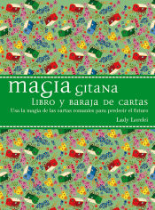
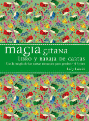
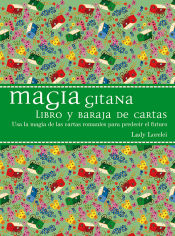

El Raider Waite

Magia Gitana
El Raider Waite

Magia Gitana
El tarot es una baraja de cartas con una función espiritual, la búsqueda del conocimiento del cuerpo,la mente y el alma es una práctica muy conocida en la comunidad europea de brujas.
La lectura del tarot comenzó con la comunidad gitana, las cartas que usaban eran sobre todo de adivinación de la fortuna. A día de hoy hay muchos tipos de tarot y se usan para muchos fines distintos, por ejemplo, leer el horóscopo, adivinar la suerte, calmar problemas o recordar vidas pasadas.
El tarot es una práctica muy usada y muy fácil de aprender, cada baraja tiene infinidad de cuestiones.
Las dos barajas de tarot más conocidas son: la Marsella y el Raider Waite.
Dentro de la comunidad gitana la más conocidad y usada es Magia Gitana de Lady Lorelei.
La Marsella
El Raider Waite

Magia Gitana
La historia de mi pueblo es bastante interesante en este aspecto, los gitanos usaban estos recursos de adivinación de la fortuna para ganarse la vida ya que estos no tenían trabajo debido su gran vida nómada, las gitanas de esos tiempos convencian a la mujeres de los pueblos de escuchar lo que ella les diría.
Su consulta del tarot la hacían en el carro de caballos con el que viajaban.
Las historias que me cuenta mi familia, dicen que la mayoría de sus abuelas tenían este trabajo.
Estas mujeres no fueron enseñadas por ninguna bruja de una red social, este don provenía de sus antepasados que se reforzaba con la necesidad de sobrevivir.
Aquellos tiempos para mi pueblo fueron bastante duros, pero siempre supieron como arreglarlo.
Hace unos años tuve una sensación que me hizo comprar mi primer tarot Magia Gitana, esta sensación no la tuve en ningún momento y la tienda de tarot por donde siempre pasaba no me llamó nunca la atención, hasta que un día si lo hizo.
La sensación de querer ayudar a la gente con sus problemas de una manera más espiritual me encanta y ver la sorpresa de lo más escépticos es un sentimiento inigualable.